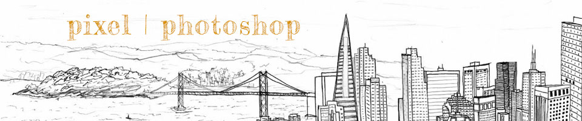

For my raster project, I wanted to create a whimsical scene. I found an inspiring photo of a young girl flying on a paper crane and suddenly I saw this whole image come to life in my head with her flying above the sea. Her crown made me instantly think of The Little Prince, one of my favorite novels as a child. I included a quote from this book that I felt tied together the ethereal and dreamy aesthetic I was going for.